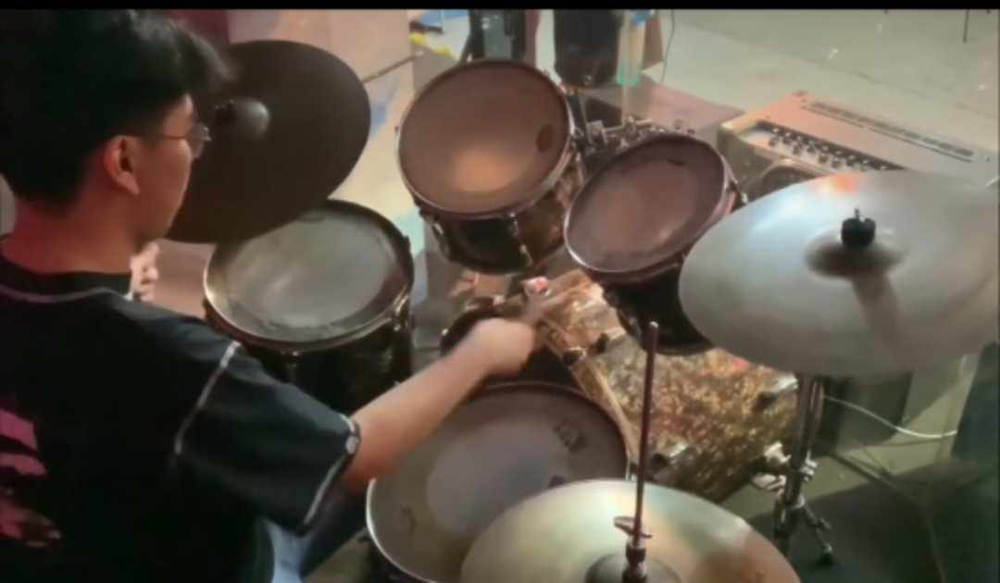

Hi i'm Haven Jethro Urbano, a student of BSIT 2-6 at Pamantasan ng Lungsod ng Valenzuela,
is a dynamic individual with a multifaceted skill set. Beyond my academic pursuits in Information Technology,
im also talented as visual artist, excelling in video editing, videography, and photography.
My creative flair extends beyond the digital realm, as I finds joy in playing the drums at church,
infusing rhythm and passion into worship services. Additionally, I also indulges my playful side through my love for gaming,
immersing myself in virtual worlds as a means of relaxation and entertainment. With a diverse range of interests and talents,
Haven brings a unique perspective to both his academic and extracurricular endeavors,
embodying a spirit of creativity, innovation, and community engagement.
